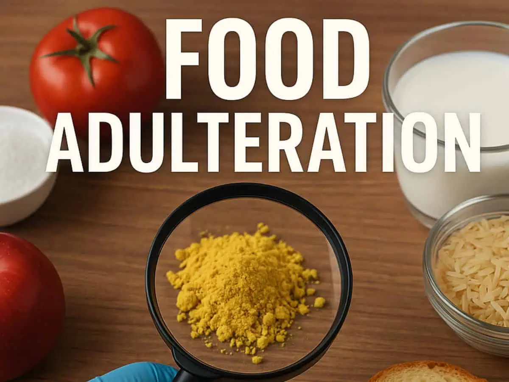

Food Adulteration
Definition
Food adulteration refers to the act of lowering the quality of food by adding, mixing, or substituting harmful, unwanted, or cheaper substances. This makes the food unsafe for consumption, affects its nutritional value, and can pose serious health risks.
Types of Food Adulteration
- Intentional – Done for profit (e.g., adding water to milk, artificial colors in spices).
- Incidental – Occurs by accident or negligence (e.g., pesticide residues, poor storage conditions).
- Metallic Contamination – Presence of harmful metals like lead, mercury, or arsenic.
- Packaging Hazards – Migration of toxins from low-quality or unsafe packaging materials.
Common Examples
- Milk → Water, starch, detergent, synthetic milk.
- Spices → Brick powder, lead salts, industrial dyes.
- Oils → Mixed with cheaper/argemone oil causing epidemic dropsy.
- Vegetables & Fruits → Artificial ripening agents (calcium carbide), harmful wax coating.
Harmful Effects
- Food poisoning, stomach infections, diarrhea.
- Damage to vital organs like liver, kidney, and heart.
- Hormonal imbalance, cancer risk, weak immunity.
- Can be life-threatening in severe cases.
Prevention / Control
- Buy food only from reliable vendors and trusted brands.
- Check for FSSAI certification and food safety labels.
- Wash fruits & vegetables thoroughly before eating.
- Avoid bright or unnaturally colored foods.
- Raise awareness and encourage strict government regulation.